Trafford Wards
Electoral wards are administrative areas, represented at council by locally elected councillors to serve the needs of the residents. There are 21 wards within Trafford, which came into force in May 2023. You can find information about the demographics and characteristics of each ward within the following profiles.
Profiles
Altrincham
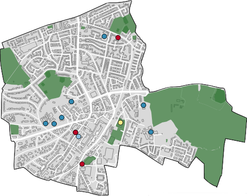
Ashton Upon Mersey
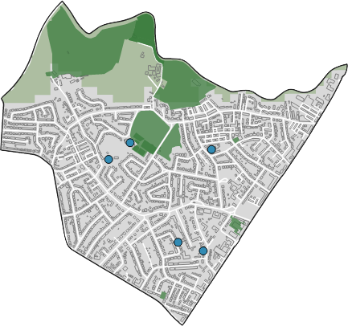
Bowdon
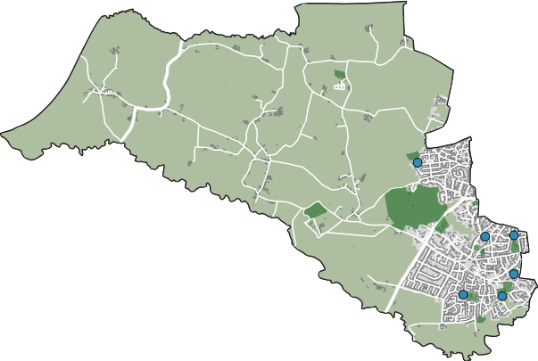
Broadheath
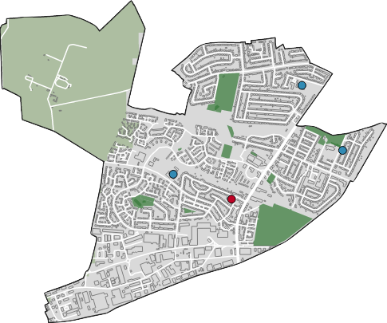
Brooklands
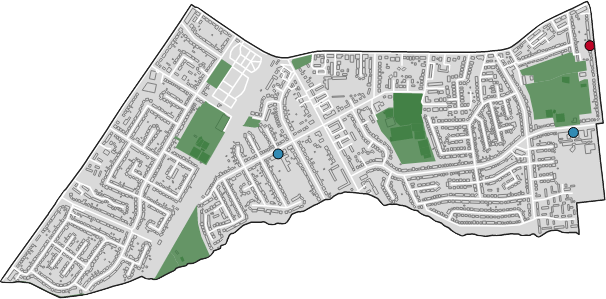
Bucklow-St Martins
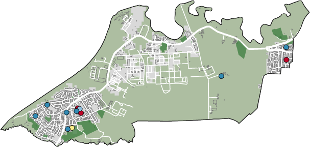
Davyhulme
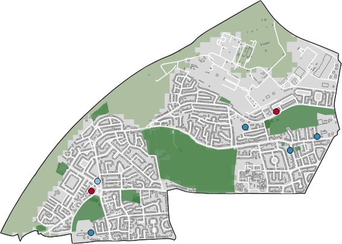
Flixton
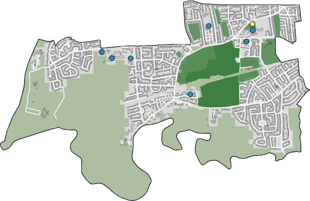
Gorse Hill & Cornbrook
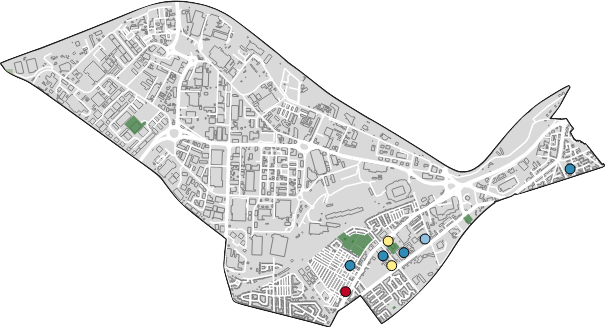
Hale Barns & Timperley South
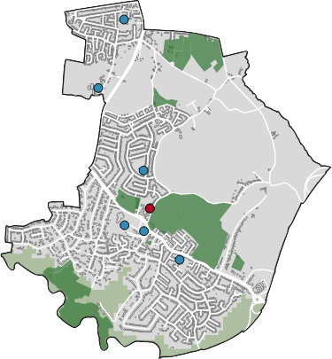
Hale
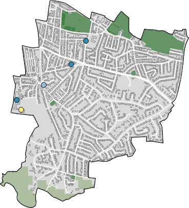
Longford
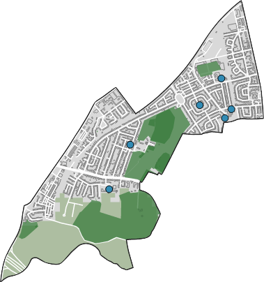
Lostock & Barton
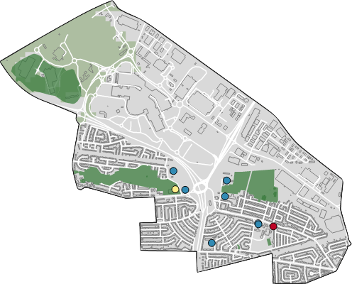
Manor
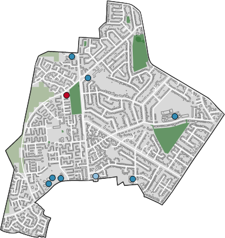
Old Trafford
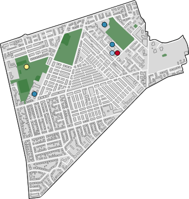
Sale Central
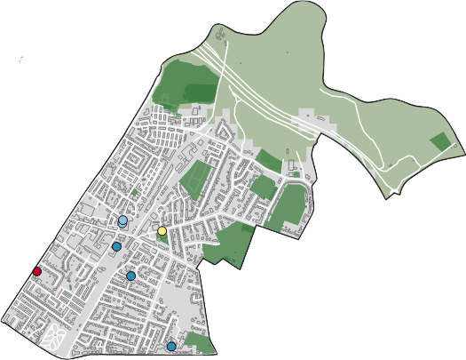
Sale Moor
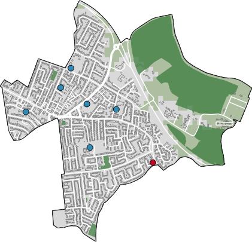
Stretford & Humphrey Park
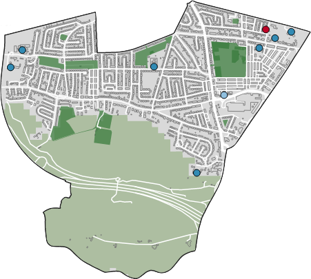
Timperley Central
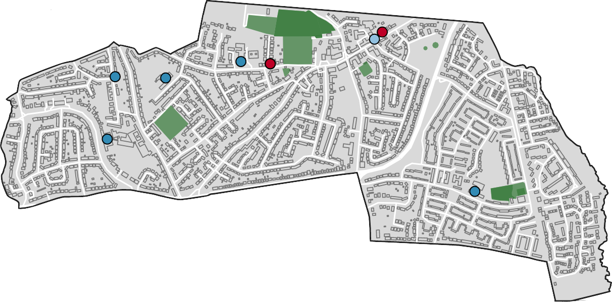
Timperley North
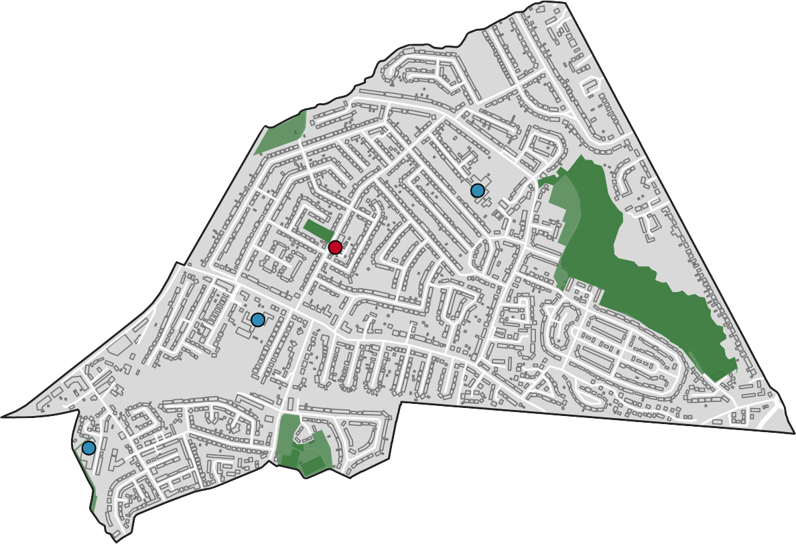
Urmston
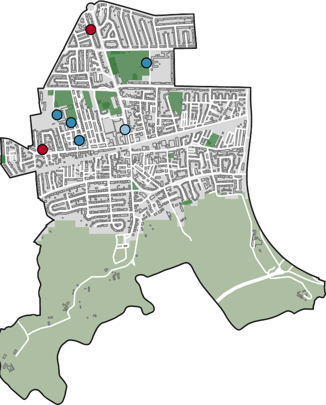
Further information and resources concerning the wards in Trafford is available from the following items.
Apps
Ward Profiler

In-depth information focussing on each of Trafford's wards. The information is presented in thematic sections as interactive maps and charts allowing for easy comparisons to be made. You can also download the data and code behind the visualisations.
Reports
Mid-Year population for Trafford’s wards

Analysis of Trafford's wards population figures including population change and population pyramids for each ward from the Mid year population estimates.
Charticles

Graphics
Resident population of Trafford

Mid-year 2022 resident population estimates for Trafford visualised by electoral ward.
Trafford wards and localities

Map of Trafford showing the boundaries of the 21 wards and 4 localities.